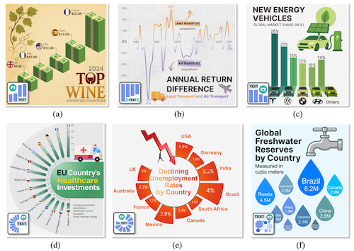
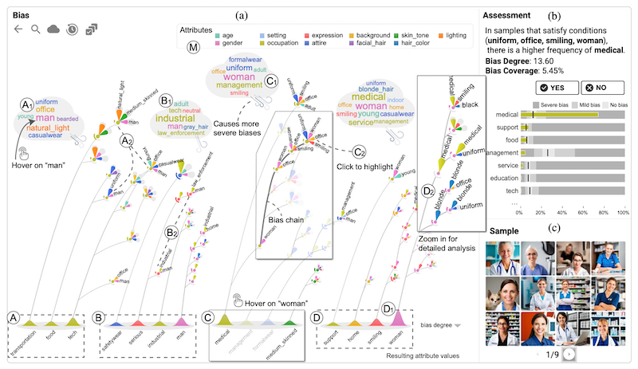
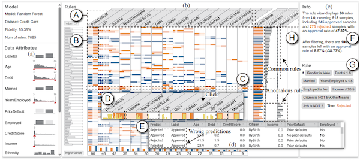
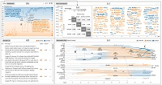
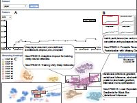
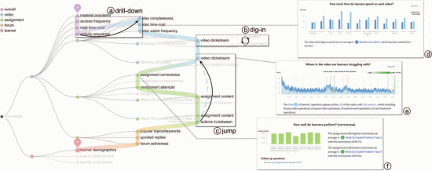
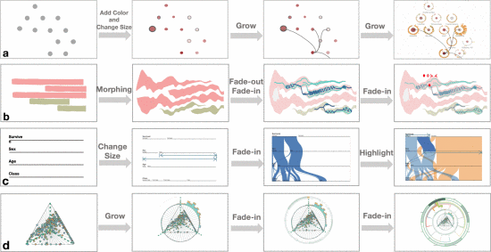
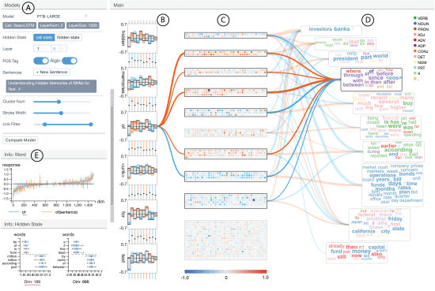
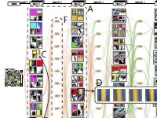

News
About Me
I am currently an Associate Professor at Tianjin University (Feb. 2026–). I received my Ph.D. degree in Software Engineering from Tsinghua University (Nov. 2025), under the supervision of Prof. Shixia Liu（刘世霞） and Prof. Hui Zhang（张慧）. Prior to that, I received my M.Phil. degree from the CSE Department at HKUST (2018), under the supervision of Prof. Huamin Qu（屈华民）. I obtained my Bachelor's degree from the Department of Computer Science at Tsinghua University (2016).
我的研究聚焦于人机智能，关注可视分析与机器学习的交叉与协同。 一方面，我研究面向可解释AI的可视分析，通过交互式可视化揭示机器学习模型的内部机理； 另一方面，我结合领域知识引导，探索大模型驱动的智能可视分析。 我的工作连接“看见 AI”与“赋能 AI”，以推动更透明、可靠、以人为中心的智能系统。
My research focuses on Human-Computer Intelligence at the intersection of visual analytics and machine learning. It spans two complementary directions: Visual Analytics for AI, where I develop interactive methods to reveal the internal mechanisms of machine learning models; and Intelligent Visual Analytics, where I explore visual analytics methods powered by large models and guided by domain knowledge. My work connects “seeing AI” and “empowering AI”, aiming to make AI systems more transparent, reliable, and useful.
Selected Publications

@article{li2026chartgalaxy,
title={Chartgalaxy: A dataset for infographic chart understanding and generation},
author={Li, Zhen and Li, Duan and Guo, Yukai and Guo, Xinyuan and Li, Bowen and Xiao, Lanxi and Qiao, Shenyu and Chen, Jiashu and Wu, Zijian and Zhang, Hui and others},
journal={International Conference on Learning Representations},
year={2026}
}


@article{li2024ruleexplorer,
title={Ruleexplorer: A scalable matrix visualization for understanding tree ensemble classifiers},
author={Li, Zhen and Yang, Weikai and Yuan, Jun and Wu, Jing and Chen, Changjian and Ming, Yao and Yang, Fan and Zhang, Hui and Liu, Shixia},
journal={IEEE Transactions on Visualization and Computer Graphics},
volume={31},
number={9},
pages={6370--6384},
year={2024},
publisher={IEEE}
}

@article{li2022unified,
title={A unified understanding of deep nlp models for text classification},
author={Li, Zhen and Wang, Xiting and Yang, Weikai and Wu, Jing and Zhang, Zhengyan and Liu, Zhiyuan and Sun, Maosong and Zhang, Hui and Liu, Shixia},
journal={IEEE Transactions on Visualization and Computer Graphics},
volume={28},
number={12},
pages={4980--4994},
year={2022},
publisher={IEEE}
}

@inproceedings{yang2020diagnosing,
title={Diagnosing concept drift with visual analytics},
author={Yang, Weikai and Li, Zhen and Liu, Mengchen and Lu, Yafeng and Cao, Kelei and Maciejewski, Ross and Liu, Shixia},
booktitle={2020 IEEE conference on visual analytics science and technology (VAST)},
pages={12--23},
year={2020},
organization={IEEE}
}

@inproceedings{chen2019designing,
title={Designing narrative slideshows for learning analytics},
author={Chen, Qing and Li, Zhen and Pong, Ting-Chuen and Qu, Huamin},
booktitle={2019 IEEE pacific visualization symposium (PacificVis)},
pages={237--246},
year={2019},
organization={IEEE}
}

@article{wang2018narvis,
title={Narvis: Authoring narrative slideshows for introducing data visualization designs},
author={Wang, Qianwen and Li, Zhen and Fu, Siwei and Cui, Weiwei and Qu, Huamin},
journal={IEEE transactions on visualization and computer graphics},
volume={25},
number={1},
pages={779--788},
year={2018},
publisher={IEEE}
}

@inproceedings{ming2017understanding,
title={Understanding hidden memories of recurrent neural networks},
author={Ming, Yao and Cao, Shaozu and Zhang, Ruixiang and Li, Zhen and Chen, Yuanzhe and Song, Yangqiu and Qu, Huamin},
booktitle={2017 IEEE conference on visual analytics science and technology (VAST)},
pages={13--24},
year={2017},
organization={IEEE}
}

@article{liu2016towards,
title={Towards better analysis of deep convolutional neural networks},
author={Liu, Mengchen and Shi, Jiaxin and Li, Zhen and Li, Chongxuan and Zhu, Jun and Liu, Shixia},
journal={IEEE transactions on visualization and computer graphics},
volume={23},
number={1},
pages={91--100},
year={2016},
publisher={IEEE}
}
Academic Services
Journal Reviewer
IEEE TVCG, Information Visualization, Visual Informatics
Conference Reviewer
IEEE VIS, ACM IUI, IEEE PacificVis (Regular and TVCG-Journal Track), ChinaVis